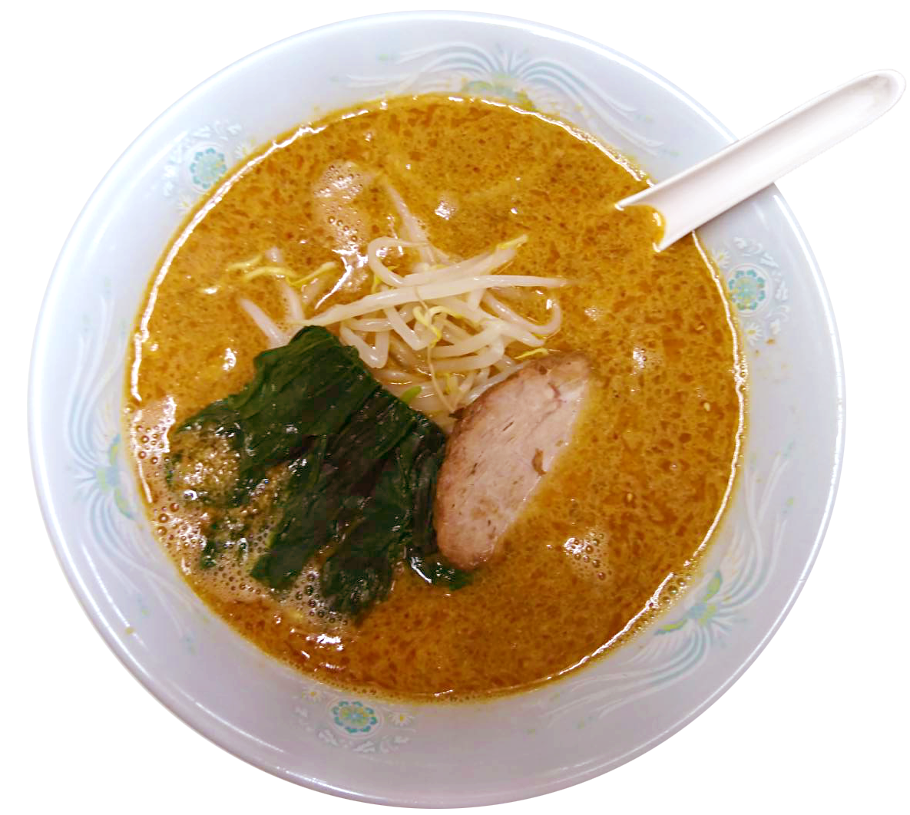
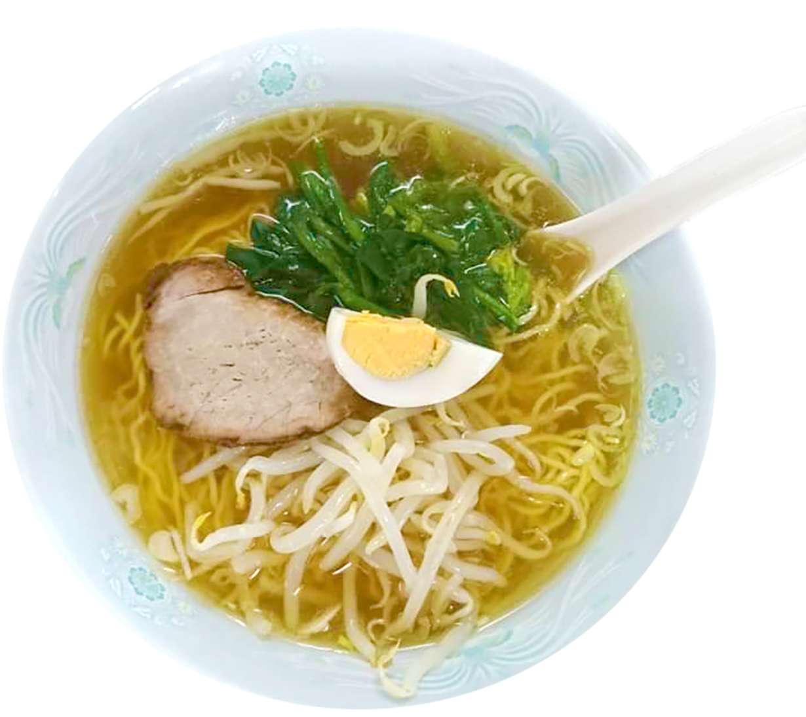
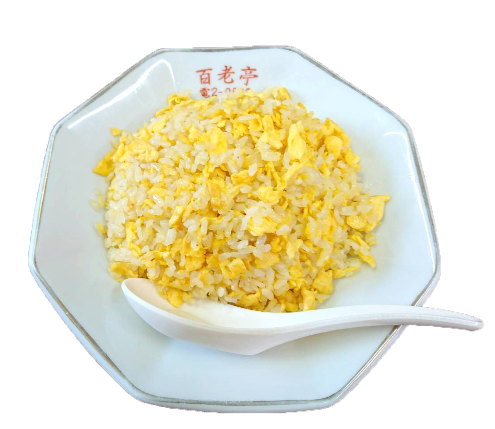
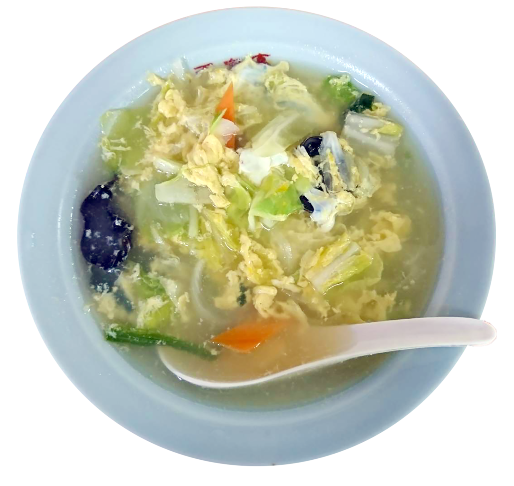
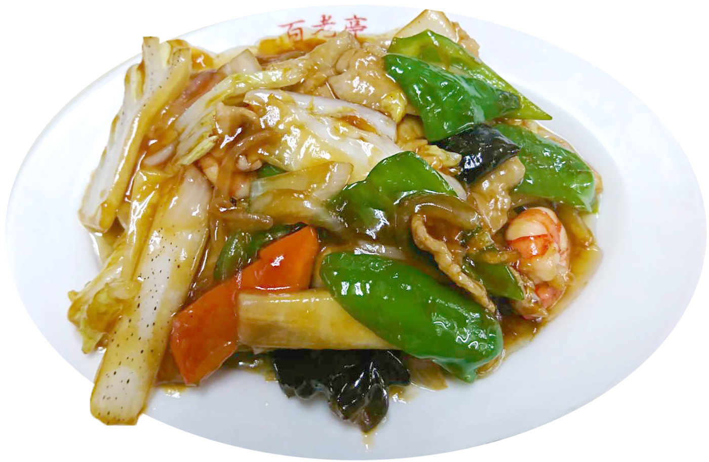

変わらない美味しさの秘密。
50年以上の営業を誇る昔ながらの味をした中華料理店です。
店主の中華料理の原点は横浜慶飯店になります。
百老亭という屋号は、静岡市内に新規開店した中華料理店にチーフとして働き、
その店からの屋号の引継ぎになります。
変わらない美味しさの秘密。
50年以上の営業を誇る昔ながらの味をした中華料理店です。
店主の中華料理の原点は横浜慶飯店になります。
百老亭という屋号は、静岡市内に新規開店した中華料理店にチーフとして働き、
その店からの屋号の引継ぎになります。
メニュー

百郎湯麺ラーメン
700円
５０年間受け継がれてきた百老亭オリジナルラーメン。
旨味と伝統が詰まったラーメンを食べられるのはここだけ。

中華そば(特製そば)
500円
シンプルながらも醤油の旨味とコクが詰まった中華そばです。
お母さんのような安心する美味しさをお楽しみ頂けます。
| 雲呑麺 | ワンタンメン | 700円 |
| 天津麺 | テンシンメン | 750円 |
| 素菜湯麺 | 野菜炒めそば | 750円 |
| 豆芽湯麺 | もやしそば | 750円 |
| 什景湯麺 | 五目そば | 800円 |
| 什景炒麺 | あんかけ焼きそば | 800円 |
| 什景炸麺 | あんかけかた焼きそば | 800円 |
| 叉焼湯麺 | チャーシューメン | 850円 |

玉子チャーハン
750円
パラパラッとして香ばしく美味しい玉子チャーハンです。
懐かしい玉子の香りが食欲をそそる一品です。
| 什景炒飯 | 五目チャーハン | 750円 |
| 中華飯 | 中華風かけ御飯 | 750円 |
| 天津飯 | かに玉かけ御飯 | 750円 |
| 豆腐 飯 | 麻婆豆腐かけ御飯 | 750円 |
| 三鮮泡飯 | 中華風のおかゆ | 700円 |
| 白飯 | ごはん | 300円 |

玉子のスープ
500円
野菜と玉子がたっぷり入った本格派、玉子スープです。
とろみがついているので最後まで温かく召し上がれます。
| 素菜湯 | 野菜のスープ | 450円 |
| 肉片湯 | 肉のスープ | 500円 |
| 素菜豆腐湯 | 野菜と豆腐のスープ | 600円 |

五目うま煮
950円
50年間の伝統が詰まった五目うま煮です。
肉と野菜のうまみがたっぷり詰まった一品です。
| 餃子 | ギョーザ | 450円 |
| 炒黄豆芽 | 肉と野菜炒め | 700円 |
| 麻婆豆腐 | 豆腐と挽肉の唐辛子煮 | 700円 |
| 叉焼肉 | 焼き豚 | 900円 |
| 炸肉片 | 肉の天麩羅 | 950円 |
| 芙蓉蟹 | かに玉 | 950円 |
| 魚香肉片 | 豚肉の香料辛子炒め | 950円 |
| 青椒肉片 | ピーマンと豚肉炒め | 1000円 |
| 乾焼蝦仁 | 小エビの唐辛子煮 | 1100円 |
| 酥炸蝦仁 | 小エビの天麩羅 | 1100円 |
| 糖醋丸子 | 肉団子の甘酢かけ | 1250円 |
| 焼肉 | やきにく | 750円 |
| 冷拌豆腐 | 中華風のやっこ豆腐 | 500円 |